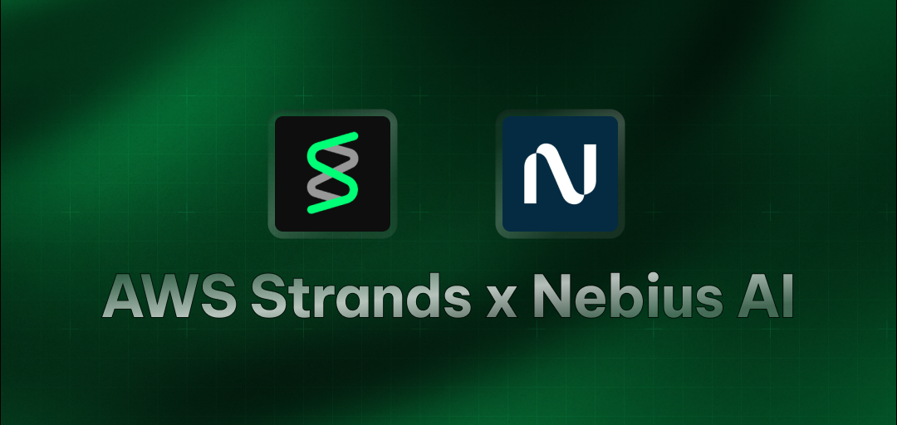

AWS Strands Starter Agent
A simple demonstration of using the Strands library with Nebius Token Factory's API to create an AI assistant that can fetch weather information.
Features
- Custom AI assistant using Nebius's LLMs with the Strands Agent SDK.
- Weather forecasting capability using the National Weather Service API.
- Demonstrates using
http_requesttool for making external API calls.
Prerequisites
- Python 3.12+
- uv - an extremely fast Python package installer and resolver.
- Nebius API key
Environment Variables
The application requires the following environment variable. You can create a .env file in the project root to store it.
NEBIUS_API_KEY: Your Nebius Token Factory API key.
Installation
-
Clone this repository and navigate to the agent's directory.
bash cd agents/aws-strands-weather-agent2. Create a virtual environment and install dependencies usinguv:```bash
Create a virtual environment
uv venv
Activate the virtual environment
source .venv/bin/activate
Install dependencies from pyproject.toml and uv.lock
uv sync ```
-
Create a
.envfile and add yourNEBIUS_API_KEY.NEBIUS_API_KEY="your-nebius-api-key"
Usage
Run the main script:
uv run agent.py
The script will:
- Create a weather assistant agent.
- Ask the agent to compare the temperature in New York and Chicago for the upcoming weekend.
- Output the assistant's response.
Customization
You can modify the agent.py file to:
- Change the assistant's
system_prompt. - Add more tools from
strands_toolsor your own custom tools. - Alter the example query passed to the
weather_agent. - Configure different LLM models supported by LiteLLM.